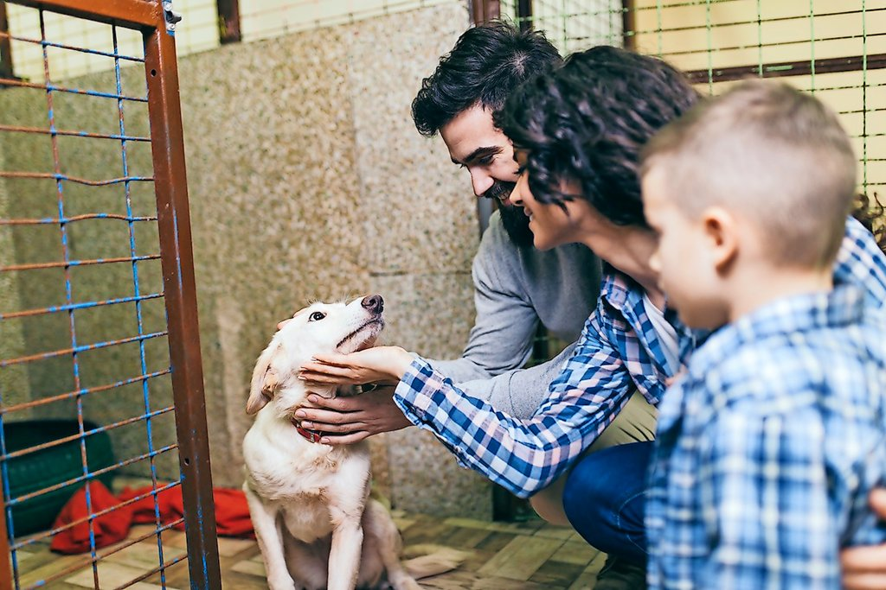

TE ESPERAMOS
Queresnos esta en tus manos y corazon

EL FUTURO DE LA FAMILIA
Nunca sabes como puede creser la familia

Queresnos esta en tus manos y corazon
Nunca sabes como puede creser la familia
Todas las personas que aman a los animales y tienen la ilusión de tener una mascota en primera instancia, suelen pensar en una tienda, en ir a por un animal de raza o recién nacido. Si nos paramos a pensar, tener una mascota no es ir a la tienda y comprar el peluche que veamos más bonito. Nuestra futura mascota es un ser vivo del que tenemos que cuidar. Millones de animales no tienen un hogar y todos los días esperan a esa familia mágica que los quiera bien. Tener una mascota en casa es una gran responsabilidad, no solo se trata de alimentarla, asearla y sacarla a pasear, además es fundamental entrenarla y darle mucho amor. Si estás considerando sumar un miembro a tu familia, mejor adoptarla. Al hacerlo sentirás una inmensa satisfacción, además lo ayudarás a tener una mejor vida.
1. Salvas una vida.
Muchas personas abandonan a sus mascotas en la calle mientras que otras las entregan en albergues o refugios. Debido a la escasez de espacio en estos lugares, en algunos casos los animales son sacrificados. Los que terminan en la calle pueden morir de hambre, atropellados, abusados o enfermos.
2. Te hacen compañía.
Tener una mascota hará que nunca te sientas solo. Con ella puedes jugar, hacer ejercicio y hasta usarla de paño de lágrimas en aquellos días grises. Son fieles compañeros, especialmente los perros.
3. No apoyarás el tráfico ilegal de animales.
Las mascotas que estás personas venden, por lo general, viven dentro de jaulas y lejos del calor humano. Además, se suele desconocer su origen y si fueron criadas responsablemente. Al comprar, se continúa con el ciclo de venta y encierro.
4. Te mantienen activo.
Pasar quince minutos paseando al perro o jugando con el gato es una buena manera de hacer ejercicio, de fortalecer el vínculo con tu mascota y, además, en el caso de los perros, te expone a socializar con otras personas.